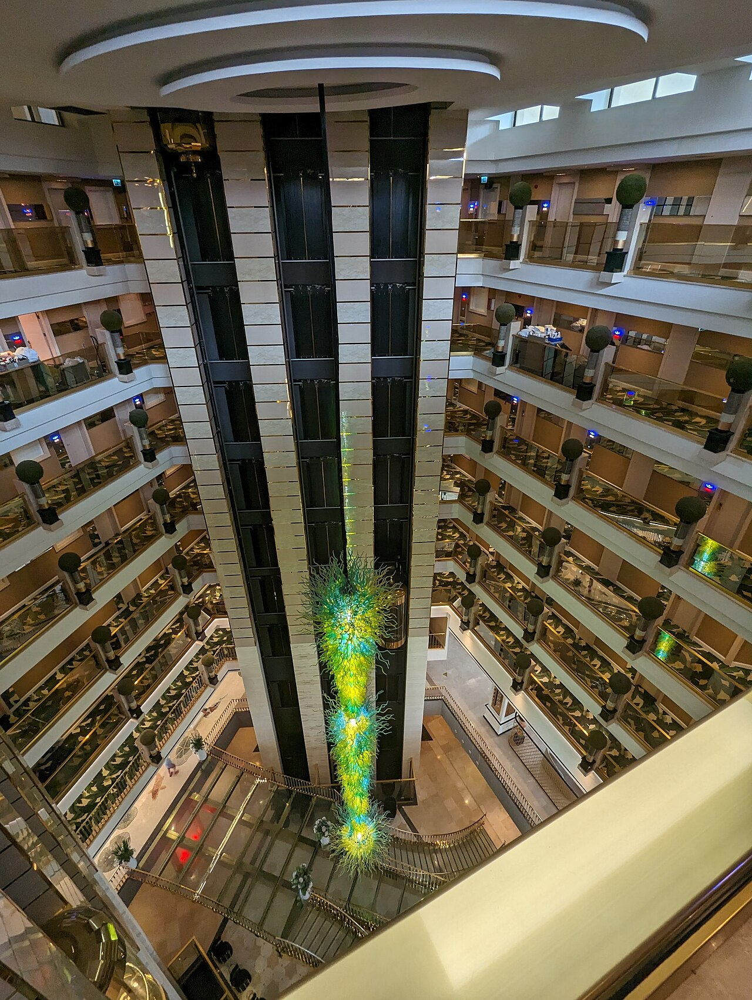

🏨 东方山水·金沙酒店
老旧备选 · 绍兴柯桥东方山水乐园度假区内
2016开业
设施陈旧
水之王国419m

实景照片 · 来源 Wikimedia Commons（CC协议）
← 返回主计划
位置与交通
地址：
浙江省绍兴市柯桥区鉴水路88号（东方山水乐园旁，与水之王国隔街相对）
距水之王国：
步行约
419m
（全计划里离水最近）
距安昌古镇：
驾车约7km / 15分钟
距柯桥夜市：
驾车约5km / 10分钟
上海自驾：
约2小时；酒店免费停车
价格参考（国庆 9/30–10/4）
房型
平日起价
国庆预估/晚
说明
标准房
约414元起
约900–1200
参考 OTA，国庆上浮
家庭房/亲子房
—
约1000–1500
含儿童友好布置
为什么降级为备选
设施陈旧是硬伤：
金沙酒店
2016年开业、478间房
，多个真实住客评价明确写"酒店比较老""设施陈旧""空调问题"。它唯一的优势是
离水之王国419m（最近）
，但代价是住宿体验差。除非你极度看重"零通勤玩水"且能接受老旧，否则建议选更优的
首旅南苑云荟
（2023新装·距玩水5分钟）或
凯悦嘉轩
（2025新开）。
仅当以下条件成立才选它
选它的理由
水之王国419m步行
一站式遛娃、少挪窝
含乐园套票划算
劝退点
2016老、设施旧
空调/浴缸故障评价多
国庆房价反而最高